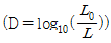
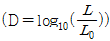
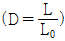
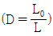
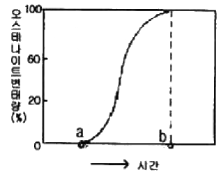
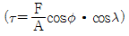

금속재료기능장 (2010-07-11 기출문제)
1과목: 임의 구분
1. 고주파 열처리 작업 중 조업안전에 대한 설명으로 틀린 것은?
- 전원투입은 순서를 정확히 지킨다.
- 보안설비의 작동을 규정된 방법에 따라 확인한다.
- 전원부 및 발진부는 작업 중 접근하여 점검한다.
- 보수 및 점검시 반든시 전원스위치를 끊고 작업한다.
(정답률: 100%)

2. 방사선 투과 사진의 어두운 정도는 필름 농도(density)로 나타낸다. 이에 대한 투과농도(D)의 식으로 옳은 것은? (단, L은 필름을 투과한 후의 빛의 강도, L0는 필름에 입사한 빛의 강도이다.)




(정답률: 78%)
3. 구리는 FCC 결정구조를 가지며, 단위격자의 격자상수는 0.465nm일 때 면간거리 d220은 약 몇 nm인가?
- 0.10
- 0.16
- 0.25
- 0.36
(정답률: 72%)
4. 다음 중 복합재료에 관한 설명으로 틀린 것은?
- 복합재료에는 클래드재료, 섬유강화 재료, 분산강화 재료 등이 있다.
- 복합재료는 일반적으로 비강도와 비탄성률이 낮아 항공기 부품이나 소재 경량화 재료에 활용되고 있다.
- 복합재료의 개념을 바탕으로 한 실용화되고 있는 재료는 자동차 타이어, 입자분산강화 합금 등이 있다.
- 어떤 목적과 특성을 얻기 위하여 2종 또는 그 이상의 다른 재료를 서로 합하여 하나의 재료로 만든 것을 복합재료라 한다.
(정답률: 81%)
5. 다음 중 마레이징강에 대한 설명으로 틀린 것은?
- 마레이징강은 탄소가 많기 때문에 담금질 열처리에 의해 경화된다.
- 50% 냉간가공 후 용체화처리하면 강도가 더욱 높아진다.
- 시효 처리로 금속간화합물의 석출에 의해 경화된다.
- 강화에 의한 마텐자이트는 비교적 연성이 크다.
(정답률: 52%)
6. 분말로 소결된 합금을 압분하는 이유로 틀린 것은?
- 치밀화
- 균질화
- 피복
- 연화
(정답률: 86%)
7. 로크웰 경도시험기 및 비커즈 경도시험기의 압입자의 각도는 각각 얼마인가?
- 로크웰 경도시험기: 136도, 비커즈 경도시험기: 120도
- 로크웰 경도시험기: 120도, 비커즈 경도시험기: 136도
- 로크웰 경도시험기: 140도, 비커즈 경도시험기: 136도
- 로크웰 경도시험기: 136도, 비커즈 경도시험기: 140도
(정답률: 79%)
8. 황동의 가공재를 상온에서 방치하거나 시간의 경과에 따라 경도 등 제성질이 악화되는 현상을 무엇이라 하는가?
- 자연균열
- 고온탈아연
- 탈아연부식
- 경년변화
(정답률: 89%)
9. 공석강을 A3 변태점 이상의 온도로 가열해서 충분히 유지한 다음 A1점 이하의 온도로 미리 가열되어 있는 열욕 속에 투입하여 오스테나이트로부터 펄라이트 항온변태 과정을 표시한 것이다. a∼b 사이에서 일어나는 변태는?

- 100% 오스테나이트
- 오스테나이트와 펄라이트 공존
- 오스테나이트에서 펄라이트 개시
- 오스테나이트에서 펄라이트 완료
(정답률: 69%)
10. 다음 중 두랄라민에 대한 설명으로 가장 거리가 먼 것은?
- 고강도 알루미늄 합금이다.
- 시효경화 효과가 없다.
- 내열 고강도용으로도 사용된다.
- 대표적인 합금계는 Al-Cu-Mg 계이다.
(정답률: 91%)
11. 열전쌍으로 사용되는 재료의 특징을 설명한 것 중 틀린 것은?
- 히스테리시스 차가 커야 한다.
- 제작이 수월하고 호환성이 있어야 한다.
- 열기전력이 크고 안정성이 있어야 한다.
- 내열, 내식성이 좋으며, 고온에서도 기계적 강도가 커야 한다.
(정답률: 92%)
12. 불꽃 시험시 강종 판별기준으로 옳지 않은 것은?
- 불꽃의 형태
- 유선의 길이
- 선명도
- 불꽃의 수
(정답률: 78%)
13. 표면에 균열이 있는 강자성체의 시험체를 검사하려할 때 표면균열의 검출강도가 가장 높은 검사법은?
- 방사선투과검사
- 초음파탐상검사
- 수침응력탐상검사
- 자분탐상검사
(정답률: 72%)
14. 다음 중 1000∼1350℃에서 사용되는 고온용 염욕제는?
- NaOH
- NaCl
- BaCl2
- CaCl2
(정답률: 75%)
15. 온도 제어 장치에서 온(on)-오프(off)의 시간 비를 편차에 비례하도록 하여 온도를 제어하는 온도 제어 장치의 명칭은?
- 프로그램 제어식 온도 제어 장치
- 비례 제어식 온도 제어 장치
- 정치 제어식 온도 제어 장치
- 버프저항 제어식 온도 제어 장치
(정답률: 92%)
16. KS B 0845에 의거한 강 용접부의 방사선투과시험에서 2종 결함으로 분류되지 않는 것은?
- 용입 불량
- 융합 불량
- 언더컷
- 가늘고 긴 슬래그 혼입
(정답률: 91%)
17. 현미경으로 금속조직을 검사할 때의 작업 순서로 옳은 것은?
- 시편 채취→폴리싱→마운팅→부식→관찰
- 시편 채취→마운팅→폴리싱→부식→관찰
- 시편 채취→부식→폴리싱→마운팅→관찰
- 시편 채취→마운팅→부식→폴리싱→관찰
(정답률: 82%)
18. 철-탄소 평형상태도에서 자기변태점 1가지와 동소변태점 2가지에 해당하는 명칭과 그에 따른 온도로 옳은 것은?
- 자기 변태점 : A2=768℃ 동소 변태점: A3=910℃, A4=1400℃
- 자기 변태점 : A3=768℃ 동소 변태점: A2=870℃, A1=1400℃
- 자기 변태점 : A1=726℃ 동소 변태점: A2=910℃, A3=1250℃
- 자기 변태점 : A3=726℃ 동소 변태점: A2=870℃, A4=1250℃
(정답률: 80%)
19. 열처리 결함 중에는 담금질시 발생하는 균열과 변형이 가장 많다. 이 때 담금질 균열 및 변형 방지 방법으로 틀린 것은?
- 축물에는 면취를 한다.
- Ms∼Mf 범위에서는 될수록 서냉한다.
- 구멍을 뚫어 부품의 각부가 균일하게 냉각되도록 한다.
- 냉각시 온도를 불균일하게 하고 될수록 변태가 동시에 일어나지 않게 한다.
(정답률: 67%)
20. 뜨임취성을 방지하기 위한 대책으로 틀린 것은?
- 고온 뜨임 후 급냉한다.
- P, Sb, N 등을 가능한 감소시킨다.
- 오스테나이트 결정립을 조대화한다.
- 뜨임할 때에는 되도록 완전한 마텐자이트로 한다.
(정답률: 47%)
2과목: 임의 구분
21. CAD 작업시 원을 그릴 때의 방법으로 틀린 것은?
- 3점 지정에 의한 방법
- 중심점과 반지름 값에 의한 방법
- 2개의 접선과 반지름 값에 의한 방법
- 시작점과 중심점에 의한 방법
(정답률: 88%)
22. 무산소 구리(Cu)의 재결정 온도는 약 몇 ℃인가?
- -5℃
- 100℃
- 200℃
- 380℃
(정답률: 66%)
23. 다음 중 방사성 동위원소가 아닌 것은?
- Cs
- Nd
- Co
- Ir
(정답률: 77%)
24. 가스질화법에 의하여 질소(N)를 강 중에 확산시킨 질화강의 성질을 설명한 것 중 옳은 것은?
- 질화온도가 높으면 질화깊이는 커지나 경도는 낮아진다.
- 질화한 것은 인장강도, 항복점이 낮아진다.
- 연신율, 단면수축율, 충격치는 높아진다.
- 피로한도는 저하한다.
(정답률: 85%)
25. 주철의 열처리에 대한 설명으로 틀린 것은?
- 미해나이트 주철의 담금질은 약 600℃에서 예열한 후 860∼870℃에서 20분 정도 가열 후 유냉한다.
- 구상화주철의 노멀라이징처리는 900℃부근에서 가열한 후 공냉한다.
- 구상화주철은 austempering 처리를 통하여 기지(matrix)를 베이나이트 조직으로 얻을 수 있다.
- 구상화주철은 고주파작업시 경도가 높아 미세균열이 발생하므로 고주파열처리는 적용하지 않는다.
(정답률: 70%)
26. 가공용 Al 합금을 크게 고강도 합금계와 내식성 합금계로 나눌 수 있다. 이 중 내식성 합금계에 해당되지 않는 것은?
- Al-Mn계
- Al-Cu-Mg계
- Al-Mn-Mg계
- Al-Mg-Si계
(정답률: 78%)
27. 산업재해에 대한 정의로 옳은 것은?
- 인명의 피해 없이 물적인 피해만을 수반할 경우
- 통제를 벗어난 에너지의 광란으로 인하여 입은 인명과 재산 피해의 경우
- 인명 피해만을 초래하는 경우
- 고의성이 없는 어떤 불안전한 행동이나 조건이 선행됨으로써 작업 능률을 저하시키며, 직접 또는 간접적으로 인명이나 재산의 손실을 가져 올수 있는 경우
(정답률: 64%)
28. 자분탐상검사법에서 선형자계를 형성하는 자계법은?
- 코일법
- 축 통전법
- 프로드법
- 전류 관통법
(정답률: 80%)
29. 기포누설시험 중 가압법에 관한 설명으로 틀린 것은?
- 압력유지시간은 최소한 15분간 유지한다.
- 시험압력은 설계압력의 10%를 초과하지 않는 범위에서 시험한다.
- 조도 측정은 30초 이상 측정하며, 작은 불연속을 검출하기 위한 조도는 500lx 이상이다.
- 사용되는 발포액은 액상세제: 글리세린: 물=1 : 1 : 4.5 의 비율로 혼합하여 사용한다.
(정답률: 70%)
30. 비정질금속(Amorphous Metal)을 제조하는 방법 중 금속가스를 이용한 방법이 아닌 것은?
- 진공증착법
- 이온도금법
- 스퍼터링법
- 전해·무전해법
(정답률: 78%)
31. 강의 5대 불순물 원소로 옳은 것은?
- Mn, Na, Mo, Zn, Al
- C, Si, P, Mn, S
- Si, Mn, Cu, Mg, Sn
- P, Al, Ag, Au, Co
(정답률: 91%)
32. 탄소강과 합금강의 뜨임시 300℃부근에서 최저 충격에너지를 나타내는 현상을 무엇이라 하는가?
- 저온 메짐
- 청열 메짐
- 고온 메짐
- 복합 메짐
(정답률: 73%)
33. 재료에 대한 강성계수(G)를 측정하는 시험법은?
- 인장시험
- 비틀림시험
- 크리프시험
- 피로시험
(정답률: 85%)
34. 판재를 원판으로 뽑기 위해 하중 9400kg을 가했을 때의 전단응력[kgf/cm2]은 약 얼마인가? (단, 원판의 직경(d)은 30mm, 판재의 두께(t)는 2.7mm 이다.)
- 2694
- 3194
- 3694
- 4194
(정답률: 64%)
35. 금속간 화합물인 Fe3C에서 Fe와 C의 원자비(%)는?
- Fe: 25%, C: 75%
- Fe: 30%, C: 70%
- Fe: 70%, C: 30%
- Fe: 75%, C: 25%
(정답률: 70%)
36. 고망간강의 특징을 설명한 것 중 틀린 것은?
- 해드필드강이라 하며, 마텐자이트 조직을 갖는다.
- 1⑤0℃부근에서 급냉하는 수인법의 열처리를 한다.
- 열전도성이 나쁘고 팽창계수도 커서 열변형을 일으키기 쉽다.
- 광석·암석의 파쇄기 등 심한 충격과 마모를 받는 부품에 이용된다.
(정답률: 54%)
37. 구조용 합금강(SNC236)에서 고온 템퍼링한 후 급냉하는 방법을 채택하는 가장 큰 이유로 옳은 것은?
- 부식 방지를 하기 위해서
- 경도를 향상시키기 위해서
- 고온 뜨임취성을 방지하기 위해서
- 합금탄화물 석출효과를 높이기 위해서
(정답률: 66%)
38. 분위기 열처리 방법에 대한 설명으로 틀린 것은?
- 탈탄 방지제를 도포하여 가열하는 방법
- 공기 중이나 산화성 분위기에서 가열하는 방법
- 중성 염욕이나 연욕 중에서 가열하는 방법
- 숯이나 주철칩 또는 침탄제 등에 묻어서 가열하는 방법
(정답률: 69%)
39. Ti의 기계적 성질에 대한 설명으로 틀린 것은?
- 내력/인장강도의 비가 0(zero)에 가깝다.
- 육방정 금속이므로 소성변형에 제약이 많다.
- 연신재에서는 그 집합조직에 따른 이방성이 나타난다.
- 상온에서 300℃ 근방의 온도 구역에서 강도의 저하가 명백히 나타난다.
(정답률: 61%)
40. 다음 중 특수강이 탄소강에 비해 풀림에 의한 연화가 곤란한 이유로 가장 큰 원인은?
- 강중에 페라이트가 특수원소를 고용하므로
- 탄화물이 결정립계에 석출하기 때문에
- 뜨임취성을 갖기 때문에
- 질량효과가 크기 때문에
(정답률: 67%)
3과목: 임의 구분
41. 강에 특수원소를 첨가할 때의 영향을 설명한 것으로 틀린 것은?
- Al을 첨가하면 결정립 성장을 억제시킨다.
- Cr을 첨가하면 내산화성 및 내식성을 증가시킨다.
- B를 미량 첨가하면 담금질성을 저하시킨다.
- Mo을 첨가하면 뜨임취성을 방지한다.
(정답률: 79%)
42. 크리프 시험에서 크리프곡선의 3단계 구분 중 제2단계의 진행상황으로 옳은 것은?
- 크리프 속도가 대략 일정하게 진행되는 정상 크리프 단계
- 크리프 속도가 점차 증가되어 파단에 이르는 가속 크리프 단계
- 초기 크리프에서 변형율이 점차 감소되는 단계
- 크리프 속도가 불규칙하게 진행되는 단계
(정답률: 67%)
43. 염욕의 구비조건을 설명한 것 중 옳은 것은?
- 염욕의 점성이 작아야 한다.
- 증발 및 휘발성이 커야 한다.
- 염욕의 순도가 낮아야 한다.
- 흡습성 및 조해성이 커야 한다.
(정답률: 73%)
44. 와전류탐상을 할 때 와전류가 얼마만큼 깊게 내부에서 흐르는가를 침투 깊이라 한다. 표준 침투 깊이에 해당하는 곳을 설명한 것 중 옳은 것은?
- 와전류의 밀도가 표면치에 약 37%로 저하하는 깊이
- 와전류의 투자율이 표면치에 약 41%로 저하하는 깊이
- 와전류의 전도율이 표면치에 약 50%로 저하하는 깊이
- 사용하는 프로브의 주파수가 표면치에 약 52Hz가 저하되는 깊이
(정답률: 68%)
45. 공압기의 압력제어 밸브 중 시스템 내의 압력이 최대허용 압력을 초과하는 것을 방지하는 밸브는?
- 릴리프 밸브
- 감압 밸브
- 시퀀스 밸브
- 언로드 밸브
(정답률: 70%)
46. “임계전단응력

”에서 Schmid인자에 해당하는 것은?- cosø·cosλ
- F/A
- F
- A
(정답률: 79%)
47. 평균 근로자 수가 100명이 있는 직장에서 1년 동안에 8명의 재해자를 냈을 때 연천인율은 얼마인가?
- 70
- 75
- 80
- 85
(정답률: 82%)
48. 철강재료에서 황(S)의 분포상태를 검사하는 방법은?
- 조직량측정법
- 설퍼프린트법
- 매크로검사법
- 현미경조직검사법
(정답률: 94%)
49. 다음 중 일반적인 재결정에 대한 설명으로 틀린 것은?
- 재결정이 일어나는데 필요한 금속의 최소한의 변형량이 있어야 한다.
- 변형도가 작을수록 재결정 온도는 높아진다.
- 재결정 온도가 증가함에 따라 재결정 완료에 필요한 시간은 증가한다.
- 금속의 순도가 증가함에 따라 재결정 온도는 감소한다.
(정답률: 40%)
50. 제어하고자 하는 대상의 물리량과 목표로 하는 값을 끊임없이 비교하여 그 차를 될수 있는 대로 작게 하여 목표치에 접금시키는 방법은?
- 시퀀스 제어
- 수치 제어
- 피드백 제어
- 원방 제어
(정답률: 82%)
51. 매크로 조직의 종류 및 기호가 올바르게 짝지어진 것은?
- 다공질- H
- 수지상정- L
- 모세균열- Lc
- 중심부 피드- Tc
(정답률: 79%)
52. 다음 중 탄소함유량이 가장 많은 조직은?
- 시멘타이트
- 페라이트
- 오스테나이트
- 펄라이트
(정답률: 81%)
53. 스텔라이트(Stellite) 합금을 설명한 것 중 틀린 것은?
- Co-Ir-Zn-Cr계 단조합금으로서 성분은 40∼67%Co, 20∼27%Ir, 0∼20%Zn, 1.5∼2⑤%Cr, 0.5∼1%C로 구성된다.
- 미국의 Haynes stellite사가 절삭공구용으로 개발한 것으로서 경도는 주조한 그대로가 HRC 약 60∼64이다.
- 형다이 등에 사용되는 외에 자동차엔진용 배기 밸브의 용착봉, 일반 밸브류의 Seat 부위에 이용된다.
- Cr 함량이 많아서 고온부식에 강하고 내열피로성, 부식등 사용조건이 가혹한 부품에 사용된다.
(정답률: 71%)
54. Ni-Cu 합금으로 고온에서 강하고 내식성, 내마모성이 우수한 것을 monel metal 이라고 한다. 이 중 Si를 4% 첨가하여 강도를 증가시키고, 열처리시에 석출강화를 일으키게 한 것은?
- R monel
- K monel
- KR monel
- S monel
(정답률: 71%)
55. 로트의 크기가 시료의 크기에 비해 10배 이상 클 때 시료의 크기와 합격판정개수를 일정하게 하고 로트의 크기를 증가시키면 검사특성곡선의 모양 변화에 대한 설명으로 가장 적절한 것은?
- 무한대로 커진다.
- 거의 변화하지 않는다.
- 검사특성곡선의 기울기가 완만해진다.
- 검사특성곡선의 기울기 경사가 급해진다.
(정답률: 72%)
56. 로트의 크기 30, 부적합품률이 10%인 로트에서 시료의 크기를 5로 하여 랜덤 샘플링할 때 시료 중 부적합 품수가 1개 이상일 확률은 약 얼마인가? (단, 초기하분포를 이용하여 계산한다.)
- 0.3695
- 0.4335
- 0.5665
- 0.63⑤
(정답률: 54%)
57. 작업개선을 위한 공정분석에 포함되지 않는 것은?
- 제품 공정분석
- 사무 공정분석
- 직장 공정분석
- 작업자 공정분석
(정답률: 61%)
58. 과거의 자료를 수리적으로 분석하여 일정한 경향을 도출한 후 가까운 장래의 매출액, 생산량 등을 예측하는 방법을 무엇이라 하는가?
- 델파이법
- 전문가패널법
- 시장조사법
- 시계열분석법
(정답률: 60%)
59. 다음 중 브레인스토밍(Brainstorming)과 가장 관계가 깊은 것은?
- 파레토도
- 히스토그램
- 회귀분석
- 특성요인도
(정답률: 65%)
60. 관리도에서 점이 관리한계 내에 있으나 중심선 한쪽에 연속해서 나타나는 점의 배열현상을 무엇이라 하는가?
- 연
- 경향
- 산포
- 주기
(정답률: 57%)